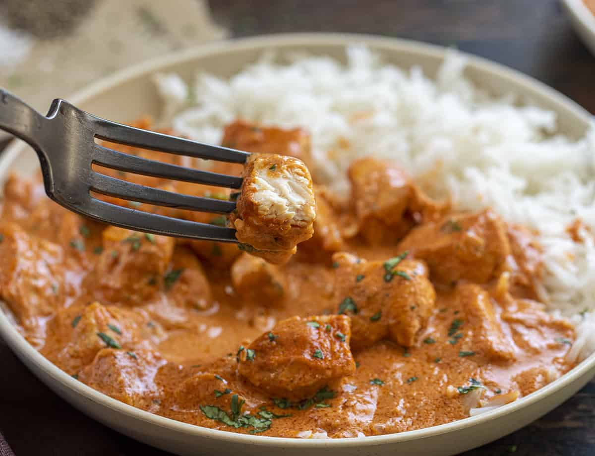

Homemade Butter Chicken

Butter chicken, traditionally known as murgh makhani, is an Indian dish originating in New Delhi. It is a type of curry made from chicken with a spiced tomato and butter sauce.
Ingredients
- 1-2 lbs Chicken Breast
- 1 cup Rice of your choice
- 1 cup Heavy whipping cream
- 1 cup chopped onion
- 1 cup chopped celery
- 1 cup chopped bell pepper
- 1 tsp tumeric powder
- 1 tsp ground cumin
- 2 tsp garam masala
- 1 tbsp ginger
- 1 tbsp minced garlic
- 2 sticks of butter
- 1 tsp peprika
- 1 pinch cayenne pepper or chili powder
- 1 tsp salt
- 1 tsp pepper
- 2 cups chicken broth
- Pour chicken broth into a pot with all spices, vegitables, and a stick of butter and bring to simmer
- Add in chicken, stir, and let simmer for 20 minutes
- After 20 minutes flip chicken, stir, and re-cover for another 20 minutes
- After another 20 minutes, shred chicken, add in heavy whipping cream, add another stick of butter, add chicken back, stir, and cover for another 20 minutes.
- While waiting for the last 20 minutes start rice so its ready when the timer stops
- After the final 20 minutes stir once more and servce butter chicken on top of rice and enjoy